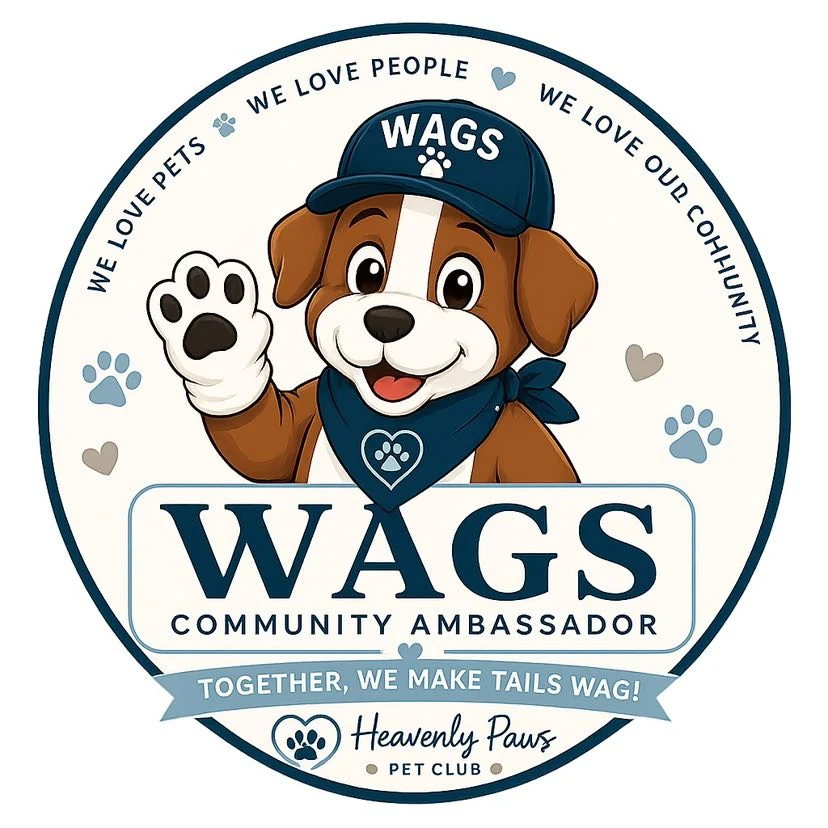

Meet WAGS!
WAGS is on a mission to spread pawsitivity and kindness everywhere he goes! As the community ambassador and mascot of Heavenly Paws Pet Club–Madison County, WAGS brings children, families, pet lovers, businesses, and community organizations together through kindness, responsible pet ownership, service, and fun.
More Than a Mascot
WAGS was created to help make Madison County an even kinder, more connected, and more pet-friendly community. He supports dogs and cats, encourages responsible pet ownership, celebrates pet-friendly businesses, participates in community events, and helps children learn that even a small act of kindness can make a big difference.
Spreading Pawsitivity Throughout Our Community
Four pillars that guide everything WAGS does
Spread Kindness
Encourage children and adults to care for others, help animals, and practice kindness every day.
Connect the Community
Bring families, businesses, schools, churches, shelters, rescues, and community organizations together.
Support Pets & Pet Parents
Share positive information about pet care, animal kindness, and responsible pet ownership.
Inspire Service
Make volunteering, giving back, and helping animals fun and meaningful for children and families.
WAGS in Action
Here's what you can expect when WAGS shows up
The WAG Handshake, Jingle, and Dance
Wherever WAGS goes, he invites children, families, staff members, and community leaders to join the fun by learning the official WAG Handshake, Jingle, and Dance.
"Spread pawsitivity and kindness everywhere you go."
The WAGS Kids Club
The WAGS Kids Club will give children fun ways to learn about kindness, pets, responsibility, and community service.
- Kindness challenges
- Pet education
- Coloring pages and activities
- Birthday greetings from WAGS
- Virtual visits and special events
- Shelter and rescue service projects
- Opportunities to be recognized for acts of kindness
Celebrating Pet-Friendly Businesses
WAGS is also the community ambassador for the Heavenly Paws Paw Partner Network. He helps welcome participating businesses, greet customers, teach the WAG Handshake, Jingle, and Dance, lead the Paw Partner Pledge, and encourage the community to Shop Paw Partner First.
Helping Pets, Children, and Families
Through the WAGS Community Outreach Initiative, WAGS helps support shelters, rescues, adoption events, children's activities, pet education, service projects, and community kindness programs.
- Adoption welcome bags
- Shelter and rescue supply drives
- Children's giveaways and WAG Swag Bags
- Pet education materials
- Community service projects
- Special events and appearances
- Equipment and transportation needed for WAGS' outreach
Help WAGS Spread Pawsitivity
WAGS Guardian Angels are individuals, families, churches, civic groups, and community supporters who help fund the WAGS Community Outreach Initiative.
Every gift helps provide the supplies, educational materials, children's activities, community appearances, service projects, equipment, and resources WAGS needs to serve Madison County.
Ready to give right now? Make a One-Time Gift · Give Monthly
One paw. One person. One good deed at a time.
Would You Like WAGS to Visit?
Schools, churches, daycares, youth organizations, businesses, nonprofits, civic groups, shelters, rescues, and community event organizers may submit a request for a WAGS appearance. Submitting a request does not guarantee availability. Each request will be reviewed based on WAGS' mission, schedule, location, and event requirements.
Let's Make Madison County a Kinder, More Pet-Friendly Community!
Follow WAGS as he meets families, visits businesses, supports community causes, helps pets in need, and spreads pawsitivity throughout Madison County.
Spreading pawsitivity and kindness everywhere we go.